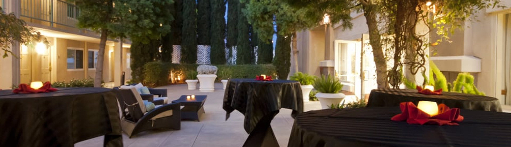
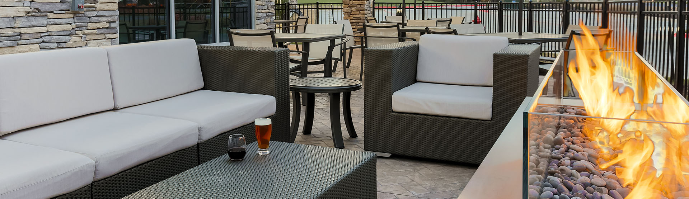

- (972) 788-2220
- 5331 Spring Valley Road, Dallas, TX 75254
  
The Westin Dallas Southlake, located at 1200 E. SH 114, held its ribbon-cutting ceremony Nov. 17, making it the city’s fourth operational hotel.
Count the days because Jellico's, a new restaurant in Southlake starring chef Jenna Kinard, has an opening date. According to a release, the restaurant formerly known as Seasons 114, opens on Wednesday, November 17.
Delta Hotels by Marriott, part of Marriott Bonvoy's extraordinary portfolio of 30 hotel brands, announced today the opening of the Delta Hotels by Marriott Santa Clara Silicon Valley, debuting the brand's refreshed guest room design inspired by its commitment to a seamless travel experience, focusing on the details that really matter.
Fort Worth chef Jenna Kinard will lead the “modern American restaurant,” which will have a focus on shared plates and seasonal food, according to a news release.
Developers are expecting to put $60 million into the project, which is envisioned as part of a plan to make Mary Avenue a key street for entertainment and leisure in downtown. The hotel will front on Mary with a glass façade, a roof terrace and sidewalk café.
The six-story hotel will offer 27 suites, four of which will include Peleton machines. Westin has partnered with the lifestyle brand at more than 50 of its hotels nationwide to offer in-room bikes...
Other amenities will include 26,000 square feet of meeting space, an 8,000-square-foot event lawn, a restaurant and bar, fitness center and a resort-style pool with pool deck...
Construction began in Fall 2019 for the six-story, 261-guestroom hotel that will feature 22 suites, 1 2-bedroom suite, and four Peloton suites. At completion, the property will include over 26,000 square feet of meeting space, an 8,000 square foot event lawn, modern restaurant and bar, state-of-the-art fitness center and resort-style pool with a pool deck and food and beverage service.
Developers, investors, Southlake Mayor Laura Hill, and City Council members and city staff gathered at 1200 E. SH 114, Southlake, for the groundbreaking of the Westin Hotel on Jan. 21.
Harrell Hospitality believes strongly in giving back to the community. The Dallas based hotel management company empowers its hotel management team to take proactive steps in helping community groups, schools, and fundraising causes.
Harrell Hospitality Group is proud to support many community organizations at the hotel and corporate level including Sky Ranch, Carroll Education Foundation, and Children's Miracle Network. Helping others is at the core of our philosophy.
Santa Ynez Valley Marriott Hotel wins the Marriott Spirit to Serve Our Communities Award
The Santa Ynez Valley Marriott hotel's General Manager, Michael Hendrick, was recently awarded with "Marriott's Spirit to Serve our Communities Award". The Spirit to Serve Our Communities Award is a very prestigious Marriott award that was only awarded to two full service Marriott hotels, out of 322 hotel and resorts. The Santa Ynez Valley Marriott, near Solvang CA, and Harrell Hospitality Hotel Management Company were very excited to have the award bestowed upon Mike Hendrick! Congratulations Mike, keep serving your community in the Santa Ynez Valley, CA!
This week, Paul Barham, CEO of Harrell Hospitality Group, joined Marcia Zidle on The Business Edge radio show to discuss key drivers for guest satisfaction. Listen in as Paul shares his experiences, addresses external forces that play a role in guest and employee satisfaction and his thoughts on the industry in the future.
Marcia has 25 years of management, business consulting and international experience in the areas of business strategy and alignment; personal and team leadership; talent engagement and management. She works with savvy entrepreneurs, CEO’s, executives, and management teams to grow their companies AND make a difference in their world. They want to move up to the next level - ahead of their competition - into new areas - over and around obstacles -beyond business as usual - towards building a solid, sustainable foundation for success.
The Business Edge with Marcia Zidle, your Smart Moves Coach, delivers practical advice to help business leaders take the growing pains out of growth. Are you facing overwhelming demands on your time? Are costly mistakes eating into your profits? Are you facing increased expectations from customers and clients and the need to strike a better balance in your life?